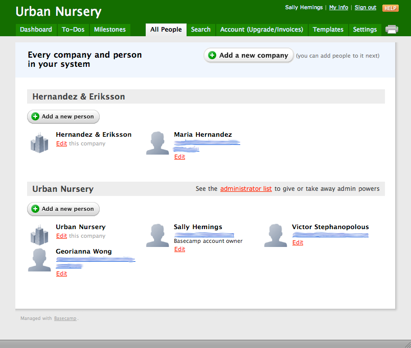

Scenario
Suppose you run a nursery. You have to supervise tending the beds, check out inventory, deal with suppliers and deal with big customers. You can't afford to lose track of who's done what, but you can't be walking over to a desktop computer all the time, nor carting around a laptop.
With your Palm Pre, Outline Tracker and Basecamp Classic you're on top of it!
Solution
Set up accounts for your employees, selected suppliers, and selected customers in Basecamp Classic:

Your Basecamp Classic Projects, Milestones, To-Do Lists, To-Do Items, Messages, and Comments are always at hand on your Palm Pre. Outline scenes display all the items for a project in a format that's easy to use on your handheld's screen. Tap the knobs to collapse or expand Milestones and To-Do Lists.
When your office manager cuts the paychecks, he can check it off using Basecamp Classic in the web browser on his desktop computer. Outline Tracker downloads Basecamp Classic changes regularly, so you don't need to phone him up to find out (especially if he's gone home for the day!)
Outline Tracker lets you assign a Place (context) to every To-Do Item and Milestone. The dynamic to-do scene displays only the To-Do Items and Milestones you can work on here and now, organized by project.
When you're in the south beds, you don't need a list of what you're picking up at a supplier's. When you're out in the truck, you just need the list of what you're picking up.
Select the To-Do & Future scene to see the Milestones associated with incomplete To-Do items, or the Waiting scene to see To-Do Items and Milestones assigned to other people.
The multi-card interface of webOS lets you quickly switch between multiple project outlines and the dynamic to-do scene.
Outline Tracker supports multiple Basecamp Classic accounts, so you can also track tasks for your household or non-profit. If your household has a task of “pick up kneepads for Ashley”, you'll see that, too, when you're running errands. With multiple Places (contexts) and Projects, Outline Tracker lets you keep your work and home life separate where they should be separate, but together where that makes life easier.
Milestones and To-Do Items with a due date are shown in the webOS Calendar application. HP® Synergy™ lets you see all of your Google, MS Exchange, Yahoo and Facebook calendars, or just some.
Have a bride who demands daily updates on her wedding flowers? Set up a Project and an account for her, and she can track progress with any web browser.
Does that high school student who works odd hours swear by her iPhone or Android handheld? No problem — there are Basecamp Classic clients for all modern smartphones. You can assign To-Do Items to her when you're thinking about them, and she'll have the To-Do List handy when she works.